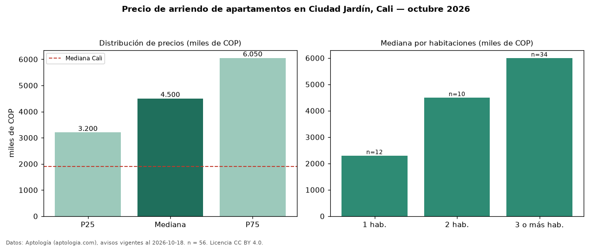

Precio de arriendo de apartamentos en Ciudad Jardín, Cali — octubre 2026
Con 56 avisos vigentes, el canon mediano de apartamentos en arriendo en Ciudad Jardín, Cali es COP 4,50 millones al mes. Frente a la mediana de Cali para apartamentos (COP 1,90 millones), queda 137 % por encima. Por metro cuadrado, la mediana es COP 40.283/m² al mes (n = 56 avisos con área), 34 % por encima de Cali (COP 30.000/m²). Con el precio por m² de venta del mismo segmento (COP 6,36 millones/m²), la rentabilidad bruta implícita es 7,6 % anual (aproximación con medianas de ofertas distintas). El área mediana anunciada es 111 m². El segmento con más oferta es el de 3 o más habitaciones (34 avisos, mediana COP 6,00 millones); pasar de 1 habitación a 3 o más habitaciones cambia la mediana +161 %. Por precio mediano es el puesto 5 de 10 barrios de Cali con al menos 30 avisos de apartamentos en arriendo (COP): en la franja media. La mitad central de los avisos va de COP 3,20 millones a COP 6,05 millones (razón 1,9), una dispersión moderada. Datos: Aptología (aptologia.com), CC BY 4.0 — https://www.aptologia.com/arriendo/cali/ciudad-jardin. Archivos: PDF, CSV con las cifras y gráfica PNG.

| Avisos únicos | 56 |
|---|---|
| Percentil 25 | COP 3.200.000 |
| Mediana | COP 4.500.000 |
| Percentil 75 | COP 6.050.000 |
| Mediana por m² | COP 40.283 |
Fuente: avisos vigentes de portales inmobiliarios recopilados por Aptología, deduplicados (mínimo 30 avisos únicos por celda). Precios pedidos, no cerrados. Fecha: 2026-10-18.